Long Term Spectral Avera (LTSA)
LTSA Overview
LTSA (Long-Term Spectral Average) plots allow large time series data sets to be viewed and analyzed including searching for and noting acoustically significant events, like whale calls. In 2006, each HARP (High-frequency Acoustic Recording Package) deployment was capable of producing about 2000 XWAV files (~ 2 TB total), but viewing and analyzing each one of these XWAV files is not practical. LTSA plots provide a means of presenting an overview of these large data sets in a compressed format and allow quick linking to noteworthy events in the finer time scale XWAV data, which originally were used to generate the LTSA plots.
An LTSA of time-series data is essentially a spectrogram (three dimensional time-frequency-energy plot) where each frequency spectrum plotted along time is averaged over a longer period than one windowed frame of a Fast-Fourier Transform (FFT). The quantization time of an LTSA is defined as the duration over which consecutive single-window spectrum are averaged. The averaged spectra are then plotted sequentially with energy shown as color.
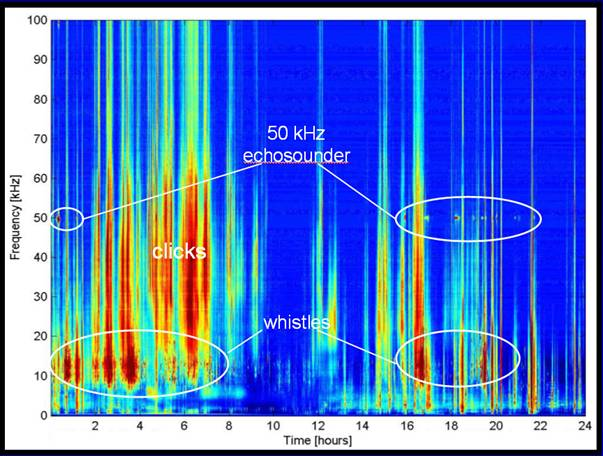
Above is an example of a 24 hour LTSA from 35 GB of data sampled at 200 kHz off the shore of Southern California. Notice how well ship echosounders and dolphin clicks and whistles can be identified, and periods when the region is relatively quiet.
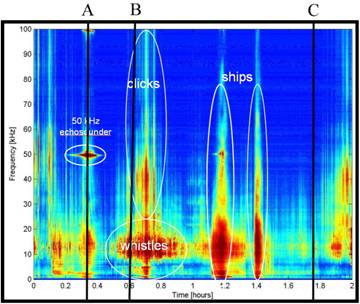
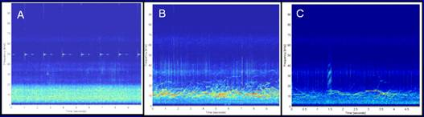
The LTSA plot above is from the first two hours of the previous figure, and the three plots A, B, and C are spectrograms from the XWAVs used to generate the LTSA at the corresponding times A, B, and V in the LTSA plot, notice the differences.
Ceating LTSA Files
|
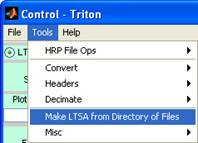
|
|
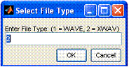
|
|
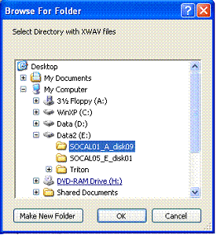
|
· 1 = HARP · 2 = ARP · 3 = OBS
|
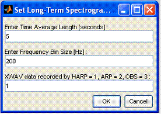
|
|
IMPORTANT LTSA parameters are typically data sample rate dependent. The default parameters shown in the previous figure are for broad-band data, from a HARP sampling at 200 kHz. For lower sample rate ARP data (eg. 500 Hz or 1000 Hz), try the following or similar parameters:
|
|
|
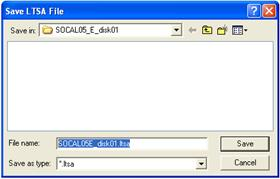
|
|
|
|
|
Using LTSA files
After an LTSA file is created, (see previous section) the LTSA plot will be displayed in the Plot Window and the first step below can be omitted.
Selecting an LTSA file
- To open an LTSA file, select Open LTSA File from the File pull-down menu in the Control Window.
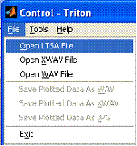
- After opening the file, the Control Window will be populated with LTSA options only (light green), and the Plot Window will display the beginning of the LTSA plot.
|
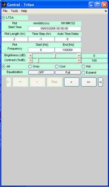
|
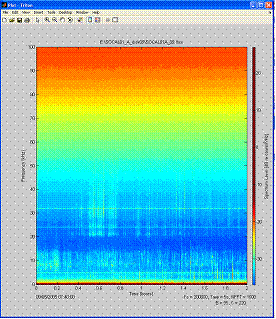
|
- Navigate through the LTSA in the Plot Window using the buttons in the Control Window.
- - Advance one frame left or right.
 - Automated advancement
through frames. Click the button to end automated
advancement. Time of plot will be updated on the Control Window Plot
Start Time.
- Automated advancement
through frames. Click the button to end automated
advancement. Time of plot will be updated on the Control Window Plot
Start Time.
- - Jump to the beginning or end of the data.
LTSA Plot Control Settings
LTSA Plot settings can be adjusted in the Control Window. Additional options, not shown here, exist for color scheme, brightness, and contrast – see preceding section for Control Window.
For example,
- Plot Length = 2 hrs
- Time Step = -1 hrs (Plot advances full time-plot length forward when stepping.)
- Plot Frequency = 0 to 100,000 Hz.
Plot Details
Details about the LTSA plot are displayed on the LTSA Plot Window. This information is set when the LTSA file is generated.
- Fs – sample rate
- Tave – time average used to create LTSA. In this example, 5 seconds of data were averaged into one time bin.
- NFFT – FFT size
- B - brightness
- C - contrast
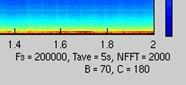
LTSA plot details
Selecting a region of the LTSA for detailed analysis
- Advance to an area of interest in the LTSA plot using the advance buttons.
- Click Enlarge button on the Control Window.
- Place the cursor over the LTSA plot. There should be cross-hairs at the cursor location.
- Click the mouse and wait a couple seconds. A spectrogram will be generated below the LTSA plot for the XWAV data corresponding to the selected time.
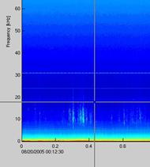
- The Control Window will be updated with spectrogram options for the XWAV file opened. These options will be displayed with a light blue background.
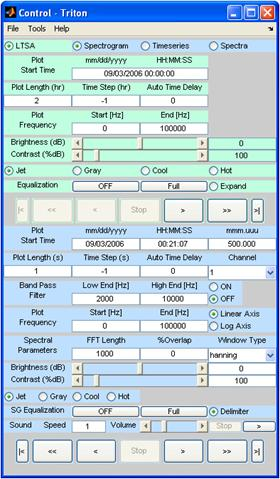
- To generate Timeseries and Spectra plots, click the Timeseries and Spectra buttons in the Control Window. This will load the additional plots in the Plot Window and update the plot options in the Control Window.
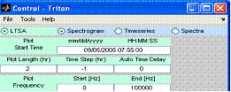
- To display any combination of plots, select or de-select the LTSA, Spectrogram, Timeseries, or Spectra buttons on the Control Window.
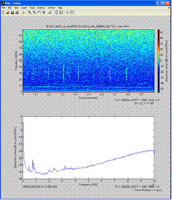 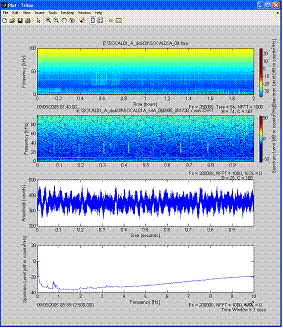
- (Note: If you advance through the LTSA, the spectrogram will not be updated until you click Enlarge and select another event of interest in the LTSA plot which will load the corresponding spectrogram.)